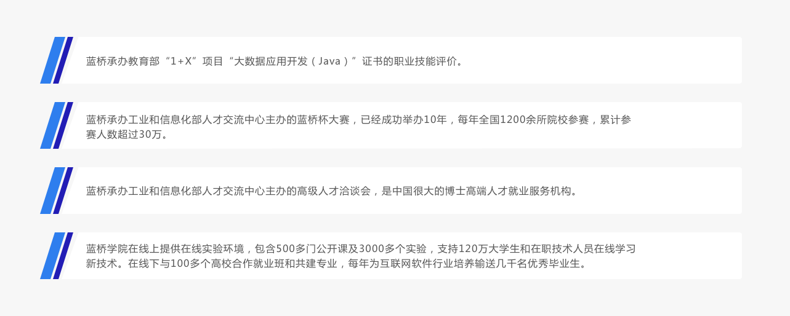

Linux 基础入门
本课程教你如何熟练地使用 Linux，本实验中通过在线动手实验的方式学习 Linux 常用命令，用户与权限管理，目录结构与文件操作，环境变量，计划任务，管道与数据流重定向等基本知识点。
本课程教你如何熟练地使用 Linux，本实验中通过在线动手实验的方式学习 Linux 常用命令，用户与权限管理，目录结构与文件操作，环境变量，计划任务，管道与数据流重定向等基本知识点。

简明易懂的 Python3 课程。从零开始，在 Linux 环境中使用 Vim，一步步带你玩转脚本语言 Python，感受编程的乐趣。对应视频教程在 https://www.bilibili.com/video/BV1CU4y1Z7gQ 。 本教程同步到https://github.com/overmind1980/oeasy-python-tutorial，欢迎关注与参与。
VS Code 环境提供了一个可以在浏览器中使用与本地安装 VS Code 几乎一致的代码编辑环境。相对于本地安装，VS Code 环境最大的好处就是随处可用，同时具备较好的代码安全性。本次实验以我们提供的 VS Code 环境为例，你只需要几秒钟就可以开启线上开发环境。
C 语言是面向过程的程序设计语言，而 C++ 语言是由 C 语言演变而来的一种面向对象的程序设计语言。课程实验内容从 C++ 语言的概念开始，通过理论学习和实验操作，初步熟知 C++ 语言。

VS Code 环境提供了一个可以在浏览器中使用与本地安装 VS Code 几乎一致的代码编辑环境。相对于本地安装，VS Code 环境最大的好处就是随处可用，同时具备较好的代码安全性。本次实验以我们提供的 VS Code 环境为例，你只需要几秒钟就可以开启线上开发环境。
本课程教你如何熟练地使用 Linux，本实验中通过在线动手实验的方式学习 Linux 常用命令，用户与权限管理，目录结构与文件操作，环境变量，计划任务，管道与数据流重定向等基本知识点。
简明易懂的 Python3 课程。从零开始，在 Linux 环境中使用 Vim，一步步带你玩转脚本语言 Python，感受编程的乐趣。对应视频教程在 https://www.bilibili.com/video/BV1CU4y1Z7gQ 。 本教程同步到https://github.com/overmind1980/oeasy-python-tutorial，欢迎关注与参与。
国信蓝桥教育科技股份有限公司是一个以职业教育为切入点，以职业服务为主线，基于大学生在人生各个阶段的需求提供精准服务的人才大数据科技服务平台。通过提供教育、就业、职业、人生服务，做大学生的经纪人，伴随大学生的成长。
